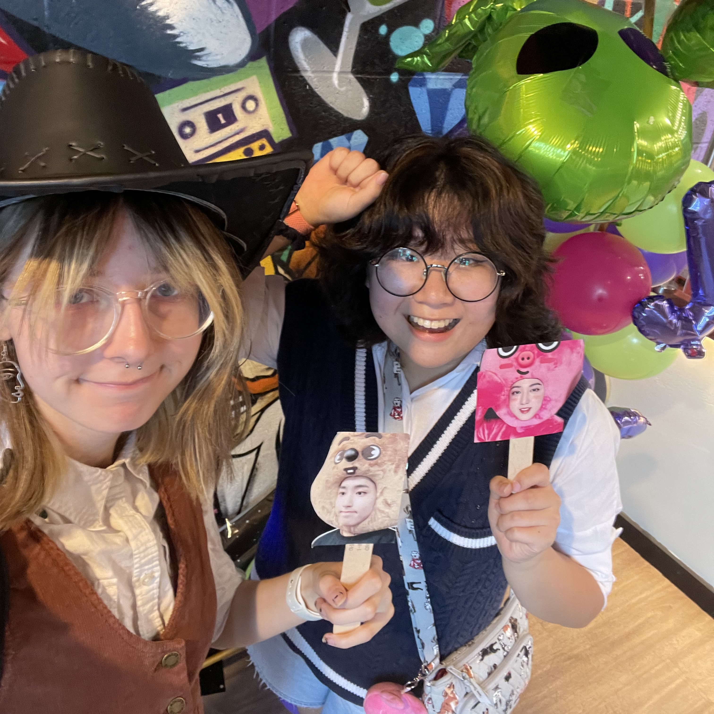
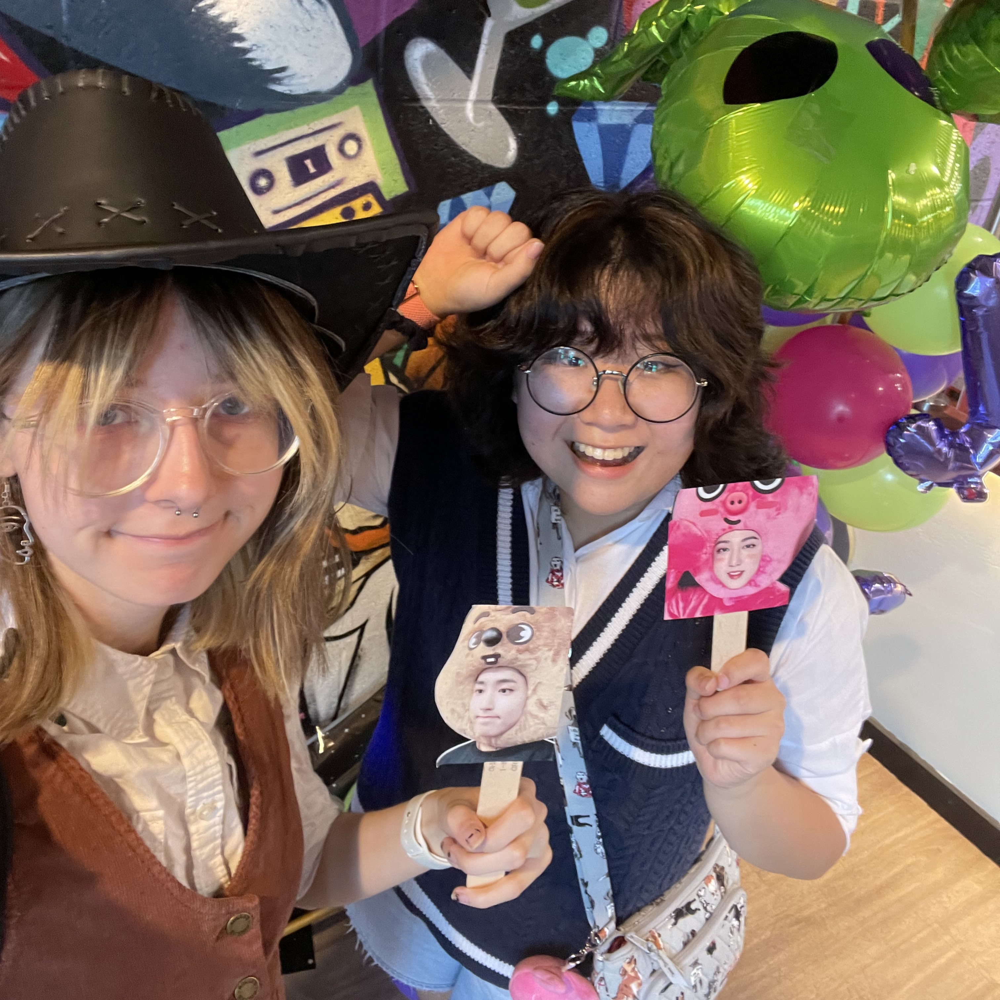

Fun Facts

 

Here are some fun pictures! I'm doing an internship at the Hillman Archives and Special Collections where I look at old photos all day. I have to wear gloves, it's pretty exciting. I love musical theatre, and I recently got to see my favorite musical ever in person (Natasha, Pierre, and the Great Comet of 1812). I'm in a dance group at Pitt (@fresaatpitt) where we do dance covers of songs! The image on the top right is the thumbnail for my favorite cover, soon to be published on Youtube. The rest are silly images of me and my friends, some I made myself (see the Weezer pic). The one all the way to the right bottom is my puppy Callie who I love very much! As you can see from some of the pictures I have chosen, the way I interact with media, especially digital, influences the way I live my life on a daily basis. I hope that I will be able to better understand its formation through this class!